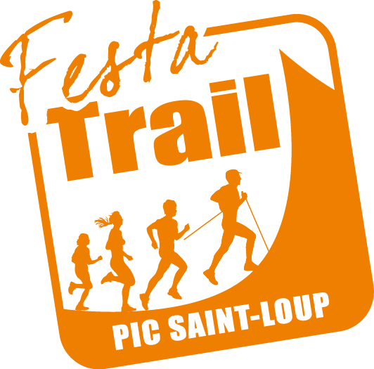
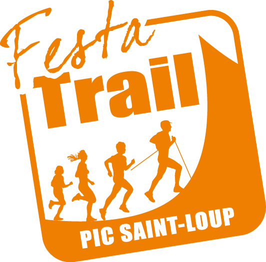

Notre état d'esprit
Transmettre et faire découvrir
Club formateur d’environ 540 licenciés, notre objectif principal est de transmettre et de faire découvrir, aux petits comme aux grands, les valeurs du sport dans un esprit de convivialité. Que vous soyez débutant ou passionné de compétition, vous trouverez l’activité qui vous correspond:
- école d'athlétisme et de trail, pour découvrir et apprendre les gestes fondamentaux de l’athlétisme, et faire de la compétition pour les plus de 12 ans intéressés
- course sur route et trail (CRT), pour pratiquer la course à pieds sous toutes ses formes, à partir de 20 ans, en loisir ou en compétition
- marche nordique, pour pratiquer la marche avec des bâtons alliant travail d'endurance et renforcement musculaire, pour tout le monde quels que soient l’âge ou la condition physique
Ecole d'athlétisme et de trail
L’athlétisme pour tous, dès 4 ans et demi !
De l’éveil athlétique aux disciplines complètes (courses, sauts, lancers), notre école d'athlétisme propose une pratique variée et conviviale accessible à tous, sans limite d’âge. Chacun découvre l’athlétisme sous toutes ses formes et, dès 12 ans, peut choisir de se spécialiser dans la discipline qui lui correspond (ou pas) et faire de la compétition (ou pas).
L'école de trail est accessible à partir des minimes 2ème année, et en découverte aux Baby Athlé et Athlé découverte une fois par mois (sur inscription, à la place de la séance d'athlétisme).
École d'athlétisme
Baby Athlé (2020 à mars 2021)
Mercredi 14h30 - 15h30
Éveil Athlétique (2017 à 2019)
U12 - Poussins (2015 et 2016)
Mercredi 15h30 - 17h00 et/ou Samedi 9h00 - 10h30
U14 - Benjamins (2013 et 2014)
U16 - Minimes (2011 et 2012)
Mercredi 15h30 - 17h00 et Samedi 10h30 - 12h30
U18 - Cadets (2009 et 2010)
U20 - Juniors (2007 et 2008)
U23 - Espoirs (2004 à 2006)
Voir avec vos entraîneurs respectifs en fonction des spécialités
Horaires indicatifs : Lundi 18h-20h ; Mercredi 15h-17h (lancers) ; Vendredi 18h-20h et Samedi 15h-17h
École de trail
Baby Athlé (2020 à mars 2021)
Mercredi 15h00 - 16h00 (une fois par mois sur inscription, places limitées)
Éveil Athlétique (2017 à 2019)
Mercredi 14h00 - 15h00 (une fois par mois sur inscription, places limitées)
À partir de minimes (2011 et avant)
Lundi 19h00 - 20h00; Mardi 14h30 - 15h30; Jeudi 19h00 - 20h00; Samedi 14h00 - 15h30 selon compétitions
CRT: Course sur route et trail
Ouvert à tous les adultes, sans limite d’âge ni de niveau
La section CRT propose de partager la passion de la course à pied sur route ou en pleine nature. Que l’on débute ou que l’on vise la performance, chacun trouve sa place dans une ambiance conviviale et motivante, au rythme de ses objectifs. Différents groupes sont proposés:
- Objectif 30
Pour celles et ceux qui souhaitent découvrir ou reprendre la course à pied en douceur. L’idée : progresser ensemble, dans un esprit convivial, jusqu’à courir 30 minutes sans s’arrêter. Le lundi et le jeudi de 18h30 à 19h00, de septembre à décembre. -
Running forme (route et trail)
La continuité idéale après Objectif 30 ! Ce groupe s’adresse à celles et ceux qui veulent garder la forme grâce à la course, partager des sorties régulières, et pourquoi pas participer à des courses pour se faire une première expérience. Le lundi et le jeudi de 18h30 à 20h00, le dimanche de 9h00 à 12h00 maximum (sortie longue). -
Loisir (trails court à ultra)
Pour celles et ceux qui aiment courir pour le plaisir tout en se fixant leurs propres défis, que ce soit pour préparer une course choisie librement ou simplement repousser ses limites. L’idée : partager des entraînements dynamiques et variés. Le lundi et le jeudi de 19h00 à 20h30 environ -
Compétition (route, trail et course de montagne)
Pour celles et ceux qui souhaitent se préparer aux courses planifiées par le club (route: 5km au marathon + 100km, trails: court à ultra). Les entraînements sont structurés et adaptés aux échéances sportives, afin d’accompagner chacun-e vers ses objectifs. PPG le lundi (sur inscription, places limitées) de 19h00 à 20h30 environ
Course le mardi et le jeudi de 19h00 à 20h30 environ
Marche nordique
Ouvert à tous les adultes, sans limite d’âge ni de niveau
Sport complet et accessible à tous, la marche nordique associe endurance, technique et bien-être en plein air. Le club propose trois groupes adaptés à chaque envie :
- débutants, pour apprendre la gestuelle spécifique Rendez-vous à 9h le samedi, de septembre à octobre
- loisir, sorties entre 8 et 15km (environ 2h) Rendez-vous à 9h le samedi
- sportif, sorties entre 15 et 22km (environ 3h) Rendez-vous à 9h le dimanche
Séance cardio pour tous le mercredi de 19h00 à 20h00
Nos partenaires
 

Contact
Informations pratiques
Adresse:
Complexe sportif Les Champs Noirs
560 Chem. de la ville
34270 Saint-Mathieu-de-Tréviers
Email:
contact@smapsl.fr